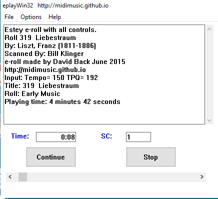

- Index
- Technical
MidiMusic Android Apps
- Android Audio Apps You can download these apps and use them on your phone or tablet.
- Android Video Apps You can download these apps and use them on your phone or tablet.
Wurlitzer and Estey e-roll Players
Eplayestey updated to indicate New Music Stages and to play all Estey e-rolls. New purpose designed soundfont for eplayestey, immense improvement particularly for stage 1 and 2 new music.
Download eplay_package_v3.4.zip Directly plays Wurlitzer and Estey e-rolls (Windows Only).
Download eplaymacpkgV3.4.zip Directly plays Wurlitzer and Estey e-rolls (iMac Only).
Download eplayfonts_v3.4.zip SOUND FONTS, NECESSARY FOR BOTH EPLAY PACKAGES ABOVE.
Estey and Wurlitzer e-roll player for Hauptwerk, Miditzer, GrandOrgue & multiOrgan Organs
Graphic Version 3.1c Now Available for download
 This graphical player will play Estey e-rolls on any Hauptwerk or Miditzer organ and Wurlitzer Band Organ e-rolls on multiOrgan (Windows, iMac and Linux)It will automatically operate the manuals, pedals, stops, couplers and swell.
As supplied this version plays the Hauptwerk St. Annes Moseley and Paramount 310 plus the Miditzer 160, 216 or 260 organs. It also plays Wurlitzer 125, 150 and 165 organs. Other Hauptwerk or Miditzer organs can be played by adding their data via the menus. It also plays my new multiOrgan and most other organs which can be played from midi keyboards, including GrandOrgue, Viscount and jOrgan.
It is optimised for playing multiple organs simultaneously. You can run two or more copies of eplayWin32 and when you tell one to "play" all copies will start playing together.
Version 3_1c includes a Replay facility which means you can replay e-rolls without having to reload them. It will also operate in 'Batch' mode to play multiple e-rolls one after the other without any attention. The help file has been updated and improved and now runs correctly on Linux. Additionally it will now produce midi sysex commands for playing Viscount organs (produced with help from Kerr Jamieson who provided information, programmed and tested the stops).
You can drag and drop your Estey or Wurlitzer e-roll files on to eplayWin32 and it will immediately play them.
I have included the usual Windows Installer option in the zip, this will automatically install eplayWin32.
Alternatively eplayWin32 will work just as well if you manually install it by copying it and its supporting files to any folder on your PC.
It will even work from a memory stick. For your convenience I have included a folder with all of the files in the downloadable zip.
Download setup_eplayWin32V3_1c.zip Easter edition, now with a detailed help file.
Version 3.1c will install and run just the same on an iMac and Linux as it does on Windows. 64 bit systems preferred
but will also work on 32 bit systems.
See multiOrgan Multiple Organ Midi Player Updated V1.1a, now available for download.
Midi, Piano Roll and Wurlitzer Technical Information
Technical Articles
- Wurlitzer Paper Music Roll Scanning How Wurlitzer midi files are made.
- Midi Specification Standard Midi File Format.
- Playing Speed of Piano Rolls Discussion.
- How to Play Wurlitzer Band Organ Music Rolls Detailed information.
- Summary table, 1929 Wurlitzer Band Organ Catalog Organs using 125 and 150 style rolls.
- Wurlitzer 125 Tracker Bar Technical details.
- Wurlitzer 150 Tracker Bar Technical details.
- Wurlitzer 165 Tracker Bar Technical details
- Wurlitzer Caliola Tracker Bar Technical details.
- Violano Virtuoso Tracker Bar Technical details.
- Estey Player Organ Tracker Bar Technical details.
- How to play Estey Music Rolls Producing Sound Fonts, Technical details.
- Internet Protocols An Introduction to the Internet.
- Music To My Ears The Story of Rich Olsens Band Organ Sound Font.